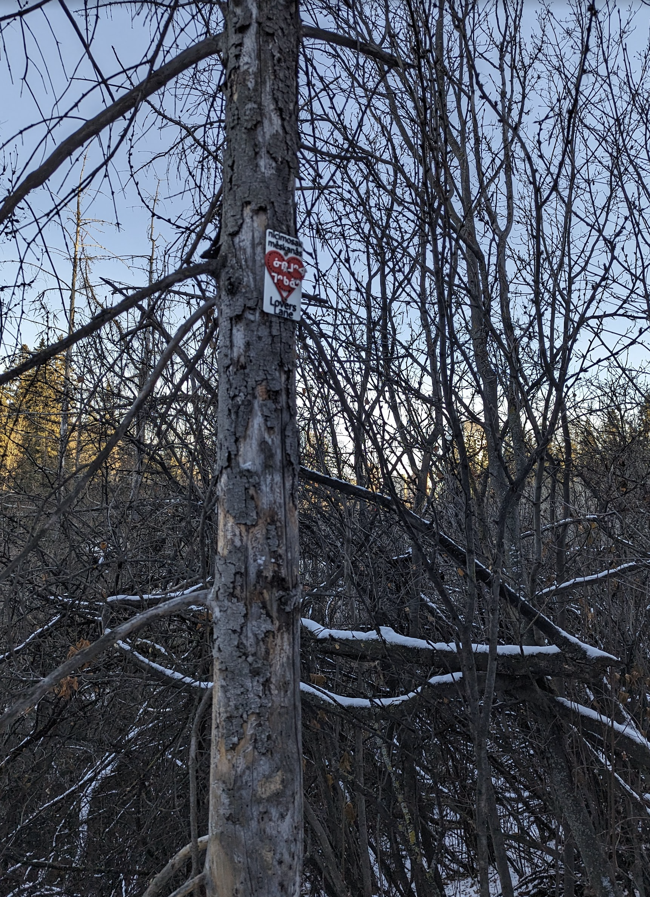

"Lovers Lane — literally ‘my sweetheart’s little path’"

3D printed plaque: red heart with three gear-discs, each carrying a piece of the syllabics ᓂᒋᒧᐢ ᒣᐢᑲᓈᐢ in white. Cropped from the wall photo (allSigns.jpg).
Lovers Lane is the rare trail name where the English and the Cree mean almost exactly the same thing. The plaque is a red-on-white heart filled with three interlocking gear-discs, each carrying a piece of the syllabics ᓂᒋᒧᐢ ᒣᐢᑲᓈᐢ in white — when you read the gears in heart-shape order they spell the phrase. ‘nicimos mêskanâs’ runs across the top in plain SRO; ‘Lovers Lane’ runs across the bottom. Two of these heart plaques are mounted on the wall.
The Cree breaks into two short pieces. nicimos is the 1sg possessed form of ‑cimos ‘sweetheart, dear, lover’ — the dependent stem that always appears with a possessor prefix (nicimos ‘my sweetheart’, kicimos ‘your sweetheart’, ocimosa ‘his/her sweetheart (obviative)’). mêskanâs is the diminutive of mêskanaw ‘road, trail, path’: literally ‘little path.’ Together: ‘my sweetheart’s little path’ — the affectionate scale of a singletrack through the river-valley bush.
The trail itself is in the Central Edmonton (North) network, on ᓀᐦᐃᔭᐤ ᐊᐢᑭᕀ Nêhiyaw‑Askiy (Plains Cree territory), near Government House just up the bank from the river. Trailforks describes it well: ‘single track that winds through tight overhanging bush creating a cool tunnel effect — rolls and flows well in both directions.’ It is a blue trail (also locally called ‘Groat Road Roller Coaster’ or ‘Monkey Trail’ in MTB vernacular) — the kind of soft, looping line that the Cree name dignifies as a path you’d take a sweetheart down.
Explore the trail on Trailforks, with a local preview from the uploaded GPX.
Free-standing word for ‘road/trail.’ With the diminutive ‑âs it becomes mêskanâs ‘little path / trail.’
The plural form. The catalogue text ‘nicimosak méskanâs’ used this plural; the plaque uses singular ‘nicimos’ (one beloved, not many).
‘Little path’ — the affectionate scale of a single-track trail through the bush, perfect for a singletrack lover’s lane.
| English | SRO | Syllabics |
|---|---|---|
| Lovers Lane — ‘my sweetheart’s little path’ | nicimos mêskanâs | ᓂᒋᒧᐢ ᒣᐢᑲᓈᐢ |
| My sweetheart, my dear | nicimos | ᓂᒋᒧᐢ |
| Road, trail, path | mêskanaw | ᒣᐢᑲᓇᐤ |
| Little river / creek (showing the same ‑âs diminutive) | sîpîs | ᓰᐲᐢ |
| Your sweetheart (2sg form) | kicimos | ᑭᒋᒧᐢ |
SRO uses ê î ô â. Syllabics match the SRO shown.
Dialectal preferences may affect minor spelling choices; check local norms for signage.
References: itwêwina, Online Cree Dictionary, Plains Cree Dictionary
Each sign is 3D printed in Edmonton. Want one for your own trail, cabin or wall?